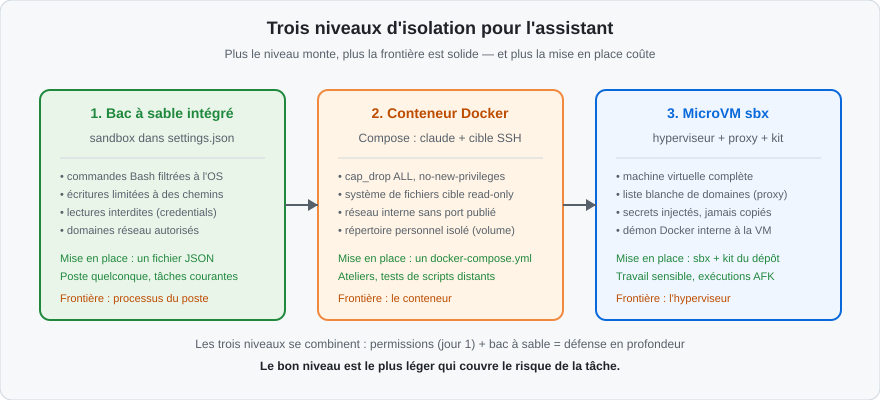
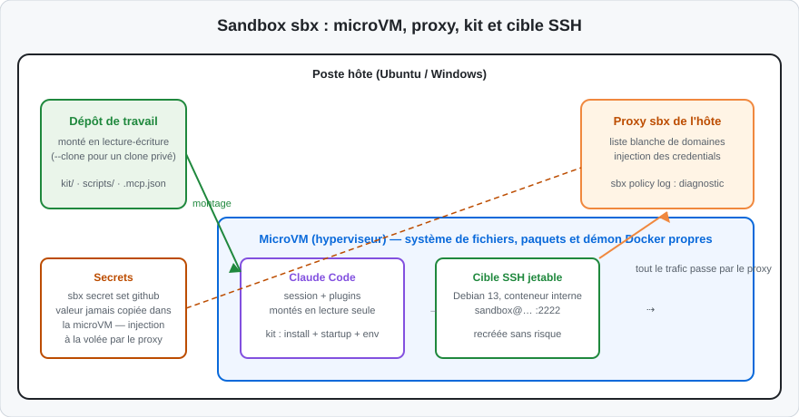
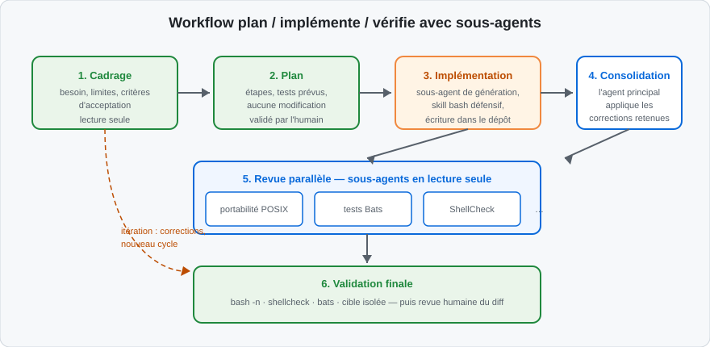
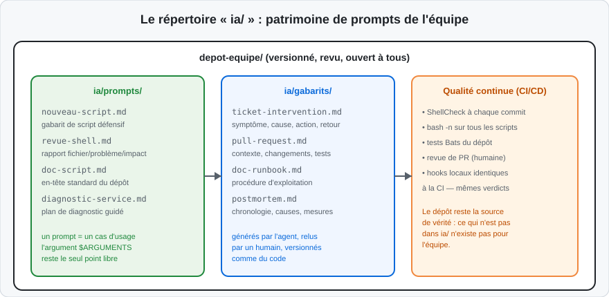

Une session Claude Code exécute des commandes Bash : lectures, écritures, appels réseau, installations de paquets. Sur un poste d'administration, ces exécutions touchent des données d'exploitation. Les permissions du jour 1 contrôlent ce que l'agent demande ; l'isolation contrôle ce que les commandes peuvent faire même quand une demande malveillante ou un message piégé contournent la vigilance de l'agent.
Pourquoi les permissions ne suffisent pas
Les permissions sont une couche de décision : l'agent choisit de demander, un humain accepte. Deux limites subsistent :
-
une injection de prompt — un texte piégé dans un fichier lu par l'agent — peut pousser l'agent à exécuter une commande en apparence anodine aux effets réels graves ;
-
une commande acceptée pour une bonne raison (installer un paquet de test) déclenche des effets en cascade que la confirmation ne montre pas (script d'installation qui touche au-delà du répertoire de travail).
La réponse est la défense en profondeur : permissions pour la décision, bac à sable (sandbox) pour la frontière. Le bac à sable limite au niveau du système d'exploitation ce que les commandes peuvent atteindre, quelle que soit l'intention derrière elles.
Trois niveaux d'isolation

Le schéma se lit de gauche à droite, du niveau le plus léger au plus solide. Le choix ne cherche pas « le maximum de sécurité » : il cherche le niveau le plus léger qui couvre le risque de la tâche. Corriger un script le matin se satisfera du bac à sable intégré ; générer un playbook Ansible qui s'exécute sur une cible justifie le conteneur avec cible SSH dédiée ; une longue exécution sans surveillance (mode AFK) exige la microVM avec liste blanche de domaines.
Niveau 1 : le bac à sable intégré
Claude Code embarque un bac à sable pour les commandes Bash, activé dans les réglages du projet ou de l'utilisateur :
{
"sandbox": {
"enabled": true,
"autoAllowBashIfSandboxed": true,
"excludedCommands": ["docker *"],
"filesystem": {
"allowWrite": ["/tmp/build", "./scripts"],
"denyRead": ["~/.ssh", "~/.aws/credentials", "./.env"]
},
"network": {
"allowedDomains": ["github.com", "*.npmjs.org", "pypi.org"]
}
}
}
Lecture du bloc :
enabledactive l'isolation des commandes Bash et de leurs sous-processus ;-
autoAllowBashIfSandboxedsupprime la confirmation pour les commandes s'exécutant dans le bac à sable — la frontière remplace le cliquodrome ; -
excludedCommandssort volontairement certaines commandes du bac à sable (ici Docker, qui reste soumis aux permissions classiques) ; -
filesystem.allowWriteborne les écritures à quelques chemins ;denyReadinterdit les lectures sensibles ; -
network.allowedDomainsborne les destinations réseau.
Les règles deny du jour 1 et le bac à sable se combinent : les deny
empêchent l'agent de tenter l'accès, le bac à sable empêche la commande de
réussir même si la tentative passe. Les restrictions de fichiers des deux
couches fusionnent en une frontière unique — c'est exactement le modèle
« permissions pour la décision, bac à sable pour l'exécution ».
Niveau 2 : le conteneur Docker Compose
Le niveau suivant exécute l'assistant et une cible d'exercice dans un projet Docker Compose : deux conteneurs, un réseau interne, un réseau sortant. Ce mode convient aux ateliers : la cible SSH est un conteneur Debian jetable, recréé à chaque session, sans aucun port publié sur l'hôte.
Niveau 3 : la microVM sbx
Le niveau le plus solide exécute Claude Code dans une microVM pilotée par un
hyperviseur, avec son propre système de fichiers, ses paquets et son démon
Docker interne. L'outil sbx orchestre la machine, et un kit décrit la
politique de la formation ou de l'équipe : domaines autorisés, secrets
injectés, installation de départ. C'est le mode des travaux sensibles et des
exécutions longues sans surveillance.
Entre le conteneur et la microVM, un paquet optionnel applique les mêmes
frontières système de fichiers et de réseau que le bac à sable intégré,
sans exiger Docker : npm install @anthropic-ai/sandbox-runtime, puis
npx @anthropic-ai/sandbox-runtime claude. Utile sur un poste sans Docker
(poste d'administration verrouillé), pour les frontières de l'OS avec une
mise en place d'une commande.
Choisir son variante d'isolement : le tableau de décision
| Critère | Bac à sable intégré | Compose | microVM sbx |
|---|---|---|---|
| Mise en place | un bloc JSON | un docker-compose.yml | sbx + kit du dépôt |
| Prérequis matériel | aucun | Docker | virtualisation (KVM/hyperviseur) |
| Cible d'exercice | le poste, via tmpfs autorisés | conteneur SSH jetable | cible SSH interne au kit |
| Liste blanche réseau | domaines déclarés | via réseau egress + proxy |
proxy hôte + sbx policy log |
| Secrets | denyRead + environnement | .env local injecté |
injection par le proxy, valeur jamais copiée |
| Persistance | celle du poste | volumes Docker | état conservé jusqu'à sbx rm |
| Cas d'usage | correction, refactoring quotidiens | ateliers, tests sur cible | travaux sensibles, AFK longs |
Installer l'environnement sbx
Sous Windows 11 : activer le support d'hyperviseur puis installer le client :
Enable-WindowsOptionalFeature -Online -FeatureName HypervisorPlatform -All
# redémarrer, puis :
winget install -h Docker.sbx
sbx login
Sous Ubuntu : vérifier KVM, ajouter l'utilisateur au groupe, installer :
lsmod | grep kvm # doit afficher kvm_intel, kvm_amd ou kvm
sudo usermod -aG kvm $USER && newgrp kvm
curl -fsSL https://get.docker.com | sudo SBX=1 sh
sbx login
La microVM exige la virtualisation : KVM actif sous Linux, hyperviseur sous
Windows. Dans une machine virtuelle de formation, la virtualisation imbriquée
doit être disponible. Si lsmod | grep kvm ne renvoie rien, kvm-ok diagnostique
le support avant toute installation — inutile d'aller plus loin sans lui.
Le kit : la politique du bac à sable
Le kit est un dossier déclaratif, spec.yaml, qui étend l'agent de base.
Extrait représentatif :
schemaVersion: "2"
kind: mixin
name: claude-admin
requires:
agent: claude
environment:
variables:
CLAUDE_CODE_DISABLE_NONESSENTIAL_TRAFFIC: "1"
TARGET_HOST: "127.0.0.1"
TARGET_PORT: "2222"
TARGET_USER: "sandbox"
permissions:
network:
allow:
- api.github.com
- gitlab.com
- registry.npmjs.org
- pypi.org
- registry-1.docker.io
- deb.debian.org
setup:
install:
- command: |
apt-get update
apt-get install -y --no-install-recommends ansible git openssh-client
user: "0"
startup:
- command: [sh, -c, "…génère la clé SSH, construit et démarre la cible…"]
user: "0"
Quatre sections font tout le travail :
| Section | Rôle | Exemple |
|---|---|---|
requires |
l'agent de base étendu par le kit | claude |
environment.variables |
variables posées dans la microVM | cible SSH, télémétrie coupée |
permissions.network.allow |
liste blanche des domaines sortants | forges, registres, miroirs de paquets |
setup.install / setup.startup |
installation une fois, démarrage à chaque session | Ansible, clé SSH, cible Debian |
Tout ce qui n'est pas dans allow est bloqué par le proxy de l'hôte. La
liste blanche est la politique réseau de l'équipe, écrite une fois, appliquée
à chaque session.
Le cycle de vie d'un sandbox sbx
# Créer / rejoindre le bac à sable avec le kit et les plugins utilisateur
bash ./scripts/run-claude-sandbox.sh
# Voir la commande sbx générée sans créer la microVM
bash ./scripts/run-claude-sandbox.sh --dry-run
# Gérer le cycle de vie
sbx ls # lister
sbx exec -it claude-admin-lab bash # ouvrir un shell dedans
sbx stop claude-admin-lab # arrêter sans détruire
sbx rm claude-admin-lab # détruire (les paquets et fichiers internes disparaissent)
Le bac à sable persiste après la fermeture de la session : paquets
installés, images Docker internes et historique de l'agent sont conservés
jusqu'à sbx rm. Le dépôt de travail, lui, reste monté depuis l'hôte en
lecture-écriture — les modifications de l'agent apparaissent immédiatement
dans le dépôt réel. L'option --clone va plus loin : l'agent travaille dans
un clone privé, le dépôt d'origine reste intact jusqu'à la recopie.

Ce schéma montre les trois garanties du niveau microVM. D'abord la
séparation : la VM possède son système de fichiers ; le poste hôte n'est
pas dans le périmètre d'exécution. Ensuite le réseau : toute la sortie passe
par le proxy de l'hôte, qui n'ouvre que les domaines de la liste blanche
(sbx policy log diagnostique un blocage). Enfin les secrets : la valeur
n'entre jamais dans la VM ; le proxy l'injecte dans les requêtes autorisées —
un compromis du poste n'expose pas les credentials.
La variante Docker Compose
Quand la microVM n'est pas disponible, un projet Compose fournit une
isolation raisonnable : un conteneur claude et un conteneur target
(Debian SSH), sans démon Docker côté assistant. Les propriétés de sécurité
sont dans le fichier, à lire ligne par ligne :
services:
claude:
build: .
cap_drop: [ALL]
cap_add: [CHOWN, SETGID, SETUID]
security_opt: [no-new-privileges:true]
volumes:
- ..:/workspace # le dépôt, monté
- ${CLAUDE_PLUGIN_ROOT}:/home/agent/.claude/plugins:ro
- claude-home:/home/agent # répertoire personnel persistant
networks: [admin, egress]
target:
build: ./target
read_only: true
tmpfs: [/run, /tmp, /home/sandbox/.ssh]
cap_drop: [ALL]
cap_add: [CHOWN, DAC_OVERRIDE, SETGID, SETUID, SYS_CHROOT]
security_opt: [no-new-privileges:true]
networks: [admin]
healthcheck:
test: ["CMD-SHELL", "test -f /ssh-keys/id_ed25519"]
networks:
admin:
internal: true # aucune sortie : la cible n'est jointe que par claude
egress: # sortie contrôlée pour l'API et les MCP HTTP
Six choix à savoir commenter :
| Ligne | Garantie |
|---|---|
cap_drop: [ALL] |
le conteneur part sans aucune capacité Linux, n'ajoute que le strict nécessaire |
no-new-privileges:true |
aucun processus enfant ne peut élever ses privilèges |
read_only sur la cible |
le système de fichiers de la cible est figé ; seuls les tmpfs sont écrits |
réseau admin interne |
la cible SSH n'a aucune route sortante, aucun port publié sur l'hôte |
volume claude-home |
l'état de l'assistant persiste sans polluer le dépôt |
healthcheck |
l'orchestration attend que la cible soit prête avant de lancer l'assistant |
Démarrage et arrêt :
# Préparer les variables locales (jamais versionnées)
cp custom_sbx/.env.example custom_sbx/.env
# renseigner CLAUDE_PLUGIN_ROOT et les clés dedans
# Lancer
docker compose --env-file ./custom_sbx/.env \
-f ./custom_sbx/docker-compose.yml run --rm claude
# Arrêter en conservant l'état / tout détruire
docker compose -f ./custom_sbx/docker-compose.yml down
docker compose -f ./custom_sbx/docker-compose.yml down -v
Dans cette variante, l'assistant joint la cible par sandbox@target:2222
avec la clé partagée par volume — aucun port n'est publié sur l'hôte, la
cible est inaccessible depuis l'extérieur du projet Compose.
Deux options sbx complètent le tableau du cycle de vie, utiles en atelier :
la publication de ports (sbx run --publish 8080:3000 à la création,
sbx ports ensuite) quand un service de la microVM doit être joint depuis
l'hôte, et les MCP fixés (--static-mcp nom-serveur) quand l'équipe
veut imposer un ensemble de serveurs MCP gérés par sbx plutôt que le
.mcp.json du dépôt. Les deux se posent à la création : un bac à sable
existant se recrée pour changer ses montages ou son kit.
Contrairement au kit sbx, Compose n'applique pas de liste blanche de
domaines : le réseau egress laisse sortir vers l'API et les MCP HTTP
selon la politique réseau de l'hôte ou de l'entreprise. Pour une politique
de sortie stricte, la faire appliquer par le proxy d'entreprise ou des
règles réseau Docker — ou passer au niveau microVM.
L'isolation cadre l'exécution ; reste la question des échanges : chaque prompt part vers le moteur d'inférence, chaque fichier lu peut s'y retrouver. Cette section établit les règles de circulation des données, secrets et flux réseau assistés.
Ce qui ne part jamais dans un prompt
Un prompt et son contexte transitent vers l'API. Trois catégories n'y figurent jamais :
- les secrets : mots de passe, clés d'API, tokens, certificats privés ;
-
les données personnelles : noms, emails, identifiants de comptes, extraits de bases utilisateurs ;
-
les données d'exploitation nominatives : adresses IP internes, topologie détaillée, noms de serveurs de production — remplacés par des pseudonymes.
La transformation se fait avant la demande. Exemple pour un script qui échoue sur un environnement réel :
# Version brute — à ne jamais coller dans un prompt :
# « Voici le log : user jdupont@entreprise.fr failed on 10.34.12.7 (PROD-FIN-01) »
# Version anonymisée, seule version acceptable :
« Voici le log (anonymisé) :
user USER1 failed on IP-INTERNE-1 (SERVEUR-A)
ERROR: connection refused on port 5432 »
Le diagnostic reste possible : l'agent travaille sur la structure de l'erreur, pas sur l'identité des systèmes. La règle se vérifie en relisant sa demande avant de l'envoyer — deux secondes qui évitent une fuite définitive.
La fuite la plus fréquente n'est pas un prompt réfléchi : c'est un
copier-coller de log « juste pour que l'agent regarde ». Le réflexe :
anonymiser par habitude, avec un alias shell si besoin
(alias anony='sed -E "s/[0-9]+\\.[0-9]+\\.[0-9]+\\.[0-9]+/IP/g"').
Ce qui est parti dans l'API ne se rappelle pas.
Secrets : injection plutôt que copie
La règle d'or : un secret vit dans l'environnement ou un gestionnaire dédié, jamais dans un fichier du dépôt, un script, un prompt ou une variable versionnée. Chaque niveau d'isolation fournit son mécanisme :
| Niveau | Mécanisme | Propriété |
|---|---|---|
| Poste (jour 1) | variable d'environnement du shell + deny Read(.env) |
le secret reste sur le poste, hors dépôt |
| Bac à sable intégré | denyRead sur ~/.ssh, ~/.aws/credentials |
la commande ne peut pas lire les credentials |
| Compose | custom_sbx/.env non versionné, injecté au démarrage |
le fichier reste local au poste |
| MicroVM sbx | sbx secret set <service> — géré par le proxy |
la valeur n'entre jamais dans la VM |
Le niveau microVM est le plus fort : le proxy de l'hôte injecte la valeur dans les requêtes autorisées, la VM ne la voit jamais.
sbx secret set github # renseigne le token GitHub une fois
sbx secret set gitlab
sbx secret ls # vérifier ce qui est déclaré (sans afficher les valeurs)
Le kit déclare l'usage attendu : quel service, quel en-tête, quel domaine. L'injection est ciblée — un token GitHub n'est ajouté qu'aux requêtes vers les domaines GitHub déclarés.
Le cas des clés SSH de cible mérite une mention propre, car il apparaît dès le premier atelier. La clé qui joint la cible de laboratoire n'est pas un secret de production, mais elle obéit aux mêmes règles :
-
générée pour l'environnement de labo uniquement, jamais réutilisée d'un environnement réel — la clé du bac à sable ne doit ouvrir que la cible du bac à sable ;
-
échangée par volume dédié entre services (le volume
target-ssh-keysdu Compose), pas par copie dans le dépôt ni par collage dans un prompt ; -
jetable sans formalité : détruire le bac à sable détruit la paire de clés ; personne ne « garde » la clé d'une cible disparue.
La question de contrôle, avant chaque atelier : si cette clé fuit dans un carnet, un log ou un dépôt, qu'est-ce qu'elle ouvre ? La bonne réponse tient en un mot : rien hors du bac à sable.
La liste blanche de domaines
Limiter les URL et domaines se fait à trois endroits, selon le niveau :
-
bac à sable intégré :
sandbox.network.allowedDomainsdans les réglages — la commande Bash ne joint que ces domaines ; -
kit sbx :
permissions.network.allow— le proxy de l'hôte bloque tout le reste ;sbx policy logliste les tentatives bloquées ; -
environnement Docker : réseau
egressrestreint, ou règles réseau de l'entreprise.
Une liste blanche d'atelier type :
permissions:
network:
allow:
- api.github.com # forge : clonage, API
- gitlab.com # forge interne ou publique
- registry.npmjs.org # paquets npm (MCP, plugins)
- pypi.org # paquets Python
- files.pythonhosted.org
- registry-1.docker.io # images Docker
- deb.debian.org # miroir de paquets de la cible
Le principe : chaque domaine répond à un besoin écrit. Une liste blanche qui s'allonge « au cas où » devient une liste noire déguisée ; la discipline d'ajout (un besoin, une justification, une ligne) garde la liste courte et lisible.
Journaliser pour prouver
Une politique qui n'est pas observable n'est pas auditable. Trois réflexes de journalisation complètent les listes blanches :
| Quoi | Où | Usage |
|---|---|---|
| Commandes exécutées par l'agent | hook PreToolUse → append local |
reconstitution post-incident |
| Tentatives réseau bloquées | sbx policy log (microVM) |
ajout justifié de domaines |
| Connexions sortantes du poste | journal du proxy d'entreprise | conformité réseau du service |
La lecture périodique de ces journaux fait partie de l'entretien du bac à sable : un domaine régulièrement bloqué et légitime rejoint la liste blanche avec sa justification ; une tentative de sortie inattendue se signale à la sécurité. Le journal n'est pas de la surveillance individuelle — c'est la trace de ce que l'agent a réellement fait, indépendamment de ce que la session en raconte.
Une commande qui échoue dans le bac à sable alors qu'elle marche sur le
poste a presque toujours la même cause : un domaine absent de la liste.
sbx policy log (microVM) montre la tentative et son verdict ; dans le
bac à sable intégré, le message d'erreur cite le domaine bloqué. Ajouter le
domaine à la liste — avec sa justification — plutôt que désactiver la
politique.
Permissions fines : le tableau de référence
Le workflow du jour 2 suppose le principe du moindre privilège, posé une fois pour toutes. Le tableau de référence de l'équipe :
| Surface | Permission par défaut | Extension justifiée |
|---|---|---|
| Dépôt | lecture | écriture par l'agent principal, après plan validé |
| Shell local | commandes d'observation, tests réversibles | commande mutante après affichage et confirmation |
| Système distant | aucune exécution au cadrage | SSH vers cible isolée, commande ciblée et validée |
| Réseau | hôtes nécessaires aux MCP, registres, documentation | ajout après justification dans le kit |
| Secrets | aucun secret dans prompts, scripts ou journaux | injection par sbx secret set ou variable locale |
| Git distant | lecture des informations nécessaires | branche, push, commentaire après approbation explicite |
Deux interdits d'application :
-
jamais de session démarrée avec
--dangerously-skip-permissions— les règles fines remplacent le contournement global ; -
jamais de MCP autorisé globalement tant que ses outils de lecture n'ont pas été séparés de ses outils mutants (
mcp__serveur__outil, jour 1).
L'atelier du jour 1 a suivi une boucle informelle : proposer, vérifier, tester, décider. Ce section la formalise en un workflow en six phases, avec des rôles (agent principal, sous-agents), des droits par phase et des contrôles à chaque sortie de phase. C'est le cœur opérationnel de la journée.
Les six phases

Le schéma distingue ce que l'humain valide (le plan, les corrections retenues) de ce que les vérifications automatisées tranchent (syntaxe, lint, tests). Les sous-agents de la phase 5 rendent des rapports : fichier, problème, impact, correctif proposé. Ils ne modifient pas le script en parallèle — l'agent principal consolide, une seule main écrit dans le dépôt.
| Phase | Objectif | Éléments Claude Code | Droits |
|---|---|---|---|
| 1. Cadrage | besoin, limites, critères d'acceptation | agent principal | lecture du dépôt |
| 2. Plan | étapes et tests prévus, sans modification | agent principal | lecture seule |
| 3. Implémentation | première version lisible et défensive | sous-agent de génération + skill Bash défensif | écriture dans le dépôt |
| 4. Consolidation | application des corrections retenues | agent principal | écriture |
| 5. Revue parallèle | portabilité, tests, lint, cible | sous-agents en lecture seule | aucun droit d'écriture |
| 6. Validation | preuves de fonctionnement | contrôles + cible isolée | exécution locale, SSH sur approbation |
Phase 1-2 : cadrer et planifier
L'amorçage type d'une session de développement de script :
> Lis CLAUDE.md, puis définis les entrées, sorties, OS cibles, droits requis,
données sensibles, conditions d'échec, journalisation et critères
d'acceptation pour ce script. Propose ensuite un plan de mise en œuvre
et de test. Ne modifie aucun fichier.
La demande impose trois choses dans l'ordre : le périmètre (entrées, sorties, cibles), les risques (données sensibles, conditions d'échec) et le plan — sans code. Le plan se corrige en une phrase ; un script mal cadré se corrige en une session.
Un cadrage sérieux se reconnaît à ses critères d'acceptation : la phrase ou
les commandes qui diront, à la fin, si le travail est terminé. « Le script
fonctionne » n'est pas un critère ; « bats tests/espace-disque.bats
passe, et l'exécution sur la cible affiche l'état des trois services du
fichier de référence » en est un. Les critères s'écrivent avant le plan :
ils orientent le choix des tests de la phase 6.
Le plan validé est un artefact de transfert : un document qui survit à la
session. Si le contexte se dégrade ou si la session s'interrompt, le plan
écrit dans le dépôt (ou le ticket) permet à la session suivante de reprendre
sans redécouvrir. C'est la même logique que CLAUDE.md, mais pour une tâche
précise plutôt que pour le dépôt entier.
Phase 3 : générer avec le cadre défensif
L'implémentation part du plan validé :
> Implémente scripts/monitoring/espace-disque.sh en suivant le plan.
Applique le skill bash-defensive-patterns : validation des paramètres,
set -euo pipefail, trap de nettoyage, journalisation, codes de retour.
Crée uniquement ce fichier.
Le skill défensif porte les exigences non négociables du dépôt :
| Exigence | Pourquoi |
|---|---|
| validation des paramètres avec message d'aide | un script sans usage est un script abandonné |
set -euo pipefail |
échouer vite et fort plutôt que continuer à moitié |
trap de nettoyage |
aucun fichier temporaire orphelin après interruption |
| journalisation des actions | le script sera exécuté par la cron, pas par un humain |
| codes de retour explicites | la cron et la CI ont besoin d'un verdict binaire |
L'agent principal applique lui-même la proposition retenue : le sous-agent de génération propose, la consolidation reste centralisée.
Phase 4-5 : consolider et passer les revues en parallèle
Après génération, les revues indépendantes tournent en parallèle, en lecture seule :
> Utilise des sous-agents en parallèle, sans modifier de fichier :
1. rapport de portabilité POSIX (constructions Bash non portables) ;
2. proposition de tests Bats : cas nominal, options invalides,
fichiers absents, erreurs de commandes ;
3. diagnostics ShellCheck : quelle alerte bloquante, quel correctif ;
4. avec mcp-ssh, inventorie la cible sans la modifier.
Retourne pour chacun : fichier, problème, impact, correctif proposé.
La force de cette phase vient de la séparation : chaque sous-agent a un contexte vierge et un mandat unique. L'auteur ne relit pas son propre travail — le rapporteur de la portabilité n'a pas écrit le script, le concepteur des tests n'a pas validé la portabilité. L'agent principal arbitre ensuite, correction par correction, en documentant ce qui est écarté et pourquoi.
L'arbitrage suit trois règles simples :
-
une correction se vérifie dans le code, pas dans le rapport — le rapport dit « ligne 42 : variable non protégée », la ligne 42 dit si c'est vrai ;
-
une correction contestable se teste — le relecteur doute d'un
rmnon borné ? Un test sur répertoire temporaire tranche en une minute ; -
un écart se consigne — refuser un avis sans le dire laisse le prochain lecteur (ou la prochaine session) croire que tout a été suivi ; une ligne « écarté : faux positif, awk disponible sur la cible » clôt le sujet.
Les vérifications automatisées (ShellCheck, bash -n, Bats) sont
déterministes : le même script donne le même verdict, l'agent peut
s'autocorriger dessus sans humain. La revue automatisée (le rapport
d'un sous-agent) est un jugement : elle peut se tromper, omettre, et se
vérifie sur la source primaire — le code — pas sur son résumé.
Phase 6 : valider
La validation exige des preuves, pas des affirmations :
bash -n scripts/monitoring/espace-disque.sh # syntaxe
shellcheck scripts/monitoring/espace-disque.sh # lint
bats tests/espace-disque.bats # tests
Le test d'intégration sur cible isolée vient après ces contrôles locaux, avec une commande explicitement validée. La session se termine par un inventaire : ce qui a été modifié, ce qui a été testé, ce qui reste à faire.
Une session de workflow, commentée
Le transcript abrégé d'une session complète dans le bac à sable Compose :
$ docker compose --env-file ./custom_sbx/.env \
-f ./custom_sbx/docker-compose.yml run --rm claude
> /mcp ; /skills ; /context
→ la cible SSH est vue ; les skills du dépôt sont chargés ;
le contexte est vierge
> Lis CLAUDE.md. Cadrage : inventorie les services attendus sur la cible
(etc/services-attendus.conf) et signale ceux qui ne tournent pas.
OS cible : Debian. Lecture seule pour l'instant. Propose un plan.
→ PHASES 1-2 : le plan s'affiche en cinq étapes
> Plan validé. Implémente avec le skill défensif. Branche atelier-3.
→ PHASE 3 : le script est proposé, diff accepté, écrit
> Lance les revues en parallèle : portabilité POSIX, tests Bats,
ShellCheck, inventaire mcp-ssh de la cible. Rapports uniquement.
→ PHASE 5 : trois rapports reviennent ; l'inventaire confirme
que la cible expose bien les services du fichier de conf
> Applique les correctifs 1 (usage manquant) et 3 (trap absent).
Écarte le 2 (faux positif : awk est dispo sur la cible). Consigne-le.
→ PHASE 4 : consolidation, deux corrections appliquées
> bash -n, shellcheck, bats. Puis exécution sur la cible avec --dry-run
d'abord, exécution réelle ensuite : sortie attendue.
→ PHASE 6 : contrôles verts ; le script rend son verdict
> Rédige la PR en suivant ia/gabarits/pull-request.md.
Points à retenir de ce déroulé :
-
la session commence par la vérification de l'environnement — travailler dans un bac à sable qui n'a pas de cible SSH visible gaspille tout le reste ;
-
le cadrage interdit l'écriture tant que le plan n'est pas validé ;
-
les rapports de revue reviennent avant la consolidation — jamais l'inverse ;
-
les corrections écartées se consignent : le prochain lecteur saura pourquoi un avis de ShellCheck ou de relecteur n'a pas été suivi ;
-
le
--dry-runprécède toujours l'exécution réelle sur cible, même dans un bac à sable : l'habitude doit être identique hors du bac à sable.
Le travail multi-sessions : la spécification
Un travail qui dépasse une session — refactoring d'un module complet, migration d'un lot de scripts — ne se pilote pas « au fil du contexte ». La pratique éprouvée : écrire une spécification, un document du dépôt qui énonce l'objectif, les contraintes, les décisions prises et la liste des tickets, chacun tenable dans une session.
# plan-refactorisation.md
## Objectif
Découper les 12 scripts de scripts/legacy/ en fonctions testables,
sans changement de comportement.
## Décisions
- Le répertoire de sortie reste scripts/ (pas de scripts/v2/).
- Chaque script migré garde son nom ; les tests bats/ accompagnent.
- Interdit : toucher à sauvegarde-base.sh (gelé pour audit, voir ticket #34).
## Tickets
1. collecte-journal.sh — en cours (session 2026-09-17)
2. purge-tmp.sh — à faire
3. alerte-disk.sh — à faire
…
Chaque session s'ouvre sur ce document, traite un ticket, met à jour l'état, et se clôt. Le document est un artefact de transfert : écrit pour un lecteur sans contexte, avec des chemins précis et non « le fichier dont on a parlé ». Les tickets indépendants peuvent même tourner en sessions parallèles — dans autant de bacs à sable.
Humain dans la boucle ou exécution sans surveillance ?
Deux modes de travail se partagent les tâches :
-
humain dans la boucle : le stagiaire suit la session, réoriente en une phrase, voit l'agent viser juste ou faux. Pour les tâches ambiguës, irréversibles ou difficiles à vérifier après coup — migration, décision de conception, tout ce qui touche la production ;
-
sans surveillance (AFK) : la session tourne seule, le résultat s'évalue après coup, par une revue du diff. Pour les tâches bien spécifiées, peu risquées et faciles à vérifier, dans un bac à sable balisé.
La règle de décision tient en deux questions : quel est le coût d'une fausse piste, et à quel moment serait-elle découverte ? Faible coût et détection rapide : le mode sans surveillance convient — avec vérifications automatisées et revue humaine finale du diff. Coût élevé ou détection tardive : rester dans la boucle. En aucun cas le mode sans surveillance ne supprime la revue humaine ; il la reporte à la fin, et le résultat doit être examinable (une branche, une PR — jamais des changements fusionnés en direct).
Sans surveillance, l'agent tranche seul chaque ambiguïté par une valeur par défaut, et chaque décision suivante se construit dessus. L'échec typique : des heures de travail cohérent, soigné, abouti — à propos de la mauvaise cible. Avant de lancer une exécution longue : lever les ambiguïtés dans le cadrage ; après : relire le diff, pas le résumé.
Un script généré puis testé n'est pas terminé : il doit être reprisable par un collègue, par la cron, et par la prochaine session de l'agent — qui n'a aucun souvenir de sa rédaction. La documentation est l'artefact de transfert qui rend la reprise possible.
Pourquoi la documentation compte double avec l'IA
Trois raisons propres au contexte assisté :
-
l'agent est sans état : sans documentation, la session suivante réexplique tout ce que la session de rédaction savait ;
-
le code généré arrive sans historique : un script hérité d'un humain traîne sa légende (qui l'a écrit, pourquoi) ; un script généré n'a que ce que la documentation en dit ;
-
la relecture humaine est le goulot : un script bien documenté se relit en deux minutes ; un script opaque se relit en vingt ou ne se relit pas.
L'en-tête standard du dépôt
Chaque script du dépôt commence par le même en-tête :
#!/usr/bin/env bash
#
# espace-disque.sh — Alerte quand une partition dépasse un seuil.
#
# Usage : espace-disque.sh [--seuil PCT] [--dry-run] [cible]
# Effets : lecture seule ; écrit une ligne dans /var/log/monitoring.log.
# Sorties : 0 = OK, 1 = seuil dépassé, 2 = erreur d'usage ou cible absente.
# Contexte : écrit avec assistance IA le [date], revu par [équipe],
# tests dans tests/espace-disque.bats.
#
set -euo pipefail
Cinq lignes qui répondent aux cinq questions d'un repreneur : ça fait quoi, comment ça s'utilise, qu'est-ce que ça touche, comment ça échoue, d'où ça vient. La ligne « Contexte » assume l'origine assistée du script et pointe vers ses tests — la traçabilité de l'équipe.
La documentation est une tâche où l'assistant excelle — à condition de lui donner le gabarit : « Complète l'en-tête standard du dépôt pour ce script, sans modifier le code. » Puis relire : la documentation générée décrit parfois ce que le script devrait faire, pas ce qu'il fait. Un test qui échoue tranchera ; la lecture du code aussi.
Documenter ce que le code ne dit pas
La bonne documentation ne paraphrase pas le code — elle ajoute ce que le code ne peut pas dire :
-
pourquoi : pourquoi ce seuil de 80 %, pourquoi ce délai entre deux tentatives, pourquoi cette exclusion ;
-
hypothèses : ce qui doit être installé sur la cible, comptes attendus, droits nécessaires ;
-
effets de bord : fichiers écrits, services redémarrés, e-mails envoyés ;
- limites connues : cas non couverts, comportement en cas de cible injoignable.
La paraphrase (« cette boucle parcourt les fichiers ») est du bruit ; l'hypothèse (« la cible doit avoir rsync ≥ 3.1, sinon la sauvegarde partielle n'est pas détectée ») est de la valeur.
Vérifier la documentation
Un contrôle simple, exécutable par l'agent ou un stagiaire : la documentation est-elle à jour du code ?
> Relis l'en-tête de scripts/monitoring/espace-disque.sh puis le code.
> Signale toute divergence : usage documenté ≠ options réelles,
> sorties documentées ≠ codes retour réels, effets documentés ≠ écritures réelles.
La documentation est une source secondaire : elle raconte le code, elle ne l'est pas. Quand elle diverge, c'est elle qu'on corrige — après avoir vérifié dans le code (source primaire) ce qui est vrai. Ce principe évite la dérive silencieuse : une documentation qui décrit le trimestre précédent avec l'assurance du trimestre courant.
Documenter à l'échelle du dossier
L'en-tête couvre le script ; le dossier a aussi sa documentation. Le même principe s'applique avec un gabarit de README de dossier, tenu court :
# scripts/monitoring/
Surveillance du parc de test : espace disque, services, journaux.
- `espace-disque.sh` — alerte de remplissage, à lire en premier.
- `verif-services.sh` — inventaire des services attendus vs en cours.
- `etc/services-attendus.conf` — la liste de référence, modifiable
par l'équipe exploitation.
Restitution : chaque script écrit une ligne dans /var/log/monitoring.log,
format commun décrit dans docs/journalisation.md.
Quand un dossier compte plus de cinq scripts, ce README devient la première lecture de toute session qui y travaille — pour l'agent comme pour l'arrivant humain. Demander sa mise à jour après chaque ajout de script fait partie du workflow de phase 6 : « mets à jour le README du dossier si le script ajouté change le périmètre ».
Un administrateur outillé, c'est un gain. Une équipe outillée, c'est un changement d'échelle — à condition de mutualiser : prompts, gabarits, contrôles et budgets. Cette section pose le socle : le répertoire « ia/ » partagé.
Le répertoire « ia/ » : patrimoine de l'équipe

Le schéma organise le patrimoine en trois colonnes. La première, les
prompts maîtres, reprend les commandes personnalisées du jour 1 et les
étend au cas d'usage de l'équipe. La deuxième, les gabarits, standardise
les documents produits par l'agent : tickets, PR, procédures. La troisième,
la qualité continue, garantit que les mêmes verdicts s'appliquent en local
et dans la CI. Tout vit dans le dépôt : ce qui n'est pas dans ia/ n'existe
pas pour l'équipe.
depot-equipe/
├── ia/
│ ├── prompts/
│ │ ├── nouveau-script.md # gabarit de script défensif
│ │ ├── revue-shell.md # rapport fichier/problème/impact/correctif
│ │ ├── doc-script.md # en-tête standard
│ │ └── diagnostic-service.md # plan de diagnostic guidé
│ ├── gabarits/
│ │ ├── ticket-intervention.md
│ │ ├── pull-request.md
│ │ ├── doc-runbook.md
│ │ └── postmortem.md
│ └── README.md # comment utiliser, comment contribuer
└── .claude/
├── commands/ → liens vers ia/prompts/ # ou déclaration directe
└── settings.json
Deux conventions font vivre le répertoire :
-
l'ouverture : toute modification de
ia/passe par une revue de PR comme du code — un prompt maître erroné se propage à toute l'équipe ; -
l'élagage : à chaque revue trimestrielle, les prompts non utilisés depuis un trimestre se corrigent ou se suppriment. Un répertoire de prompts morts coûte plus à explorer qu'il ne rapporte.
Standardiser les documents générés
L'agent rédige vite, mais chaque stagiaire obtient une mise en forme
différente. Le gabarit standardise la structure, l'humain garde le
fond. Exemple ia/gabarits/pull-request.md :
## Contexte
[Pourquoi cette PR : le problème, l'incident, le besoin. Une phrase.]
## Changements
[ Liste des modifications, fichier par fichier, une ligne chacune. ]
## Tests
[ Comment ça a été vérifié : commandes, résultats, cible. ]
## Risques et points de relecture
[ Ce qu'un relecteur doit regarder en priorité. ]
Le même principe s'applique aux tickets d'intervention (symptôme, cause, action, retour) et aux postmortems (chronologie, causes, mesures). L'agent remplit la structure à partir du contexte de la session ; le relecteur vérifie le fond. Le document type s'appelle par son chemin dans la demande : « Rédige la PR de ce script en suivant ia/gabarits/pull-request.md ».
Un gabarit n'est pas seulement une structure : c'est un prompt. En le
citant dans la demande, l'humain donne à l'agent les critères d'une PR
acceptable de l'équipe — sans les réexpliquer. Les gabarits sont les
candidats naturels aux commandes personnalisées (/pr, /ticket).
Intégration au workflow Git et à la CI/CD
L'usage en équipe s'appuie sur les garde-fous existants du dépôt :
| Pratique | Règle | Outil |
|---|---|---|
| Branches | l'agent travaille sur une branche, jamais sur main |
ask sur git commit, deny sur git push |
| Revue humaine | toute PR générée ou assistée se relit comme une PR humaine — le diff, pas le résumé | revue de PR (forge) |
| Qualité | ShellCheck et bash -n sur tous les scripts, tests Bats du dépôt |
pipeline CI |
| Parité local/CI | les hooks locaux exécutent les mêmes contrôles que la CI | hooks + pipeline |
| Traçabilité | message de commit standard : quoi, pourquoi, référence au ticket | conventions de commit |
La parité local/CI mérite une explication : l'agent s'autocorrige sur les vérifications automatisées locales (jour 1, hooks). Si la CI applique des règles différentes, la correction locale cesse d'être fiable. Mêmes commandes, mêmes versions, mêmes seuils — sinon l'agent « corrige » un code juste ou livre un code que la CI rejettera.
# .gitlab-ci.yml (extrait)
lint-scripts:
script:
- shellcheck scripts/**/*.sh
- bash -n scripts/**/*.sh
tests-bats:
script:
- bats tests/
Avec cette pipeline, une PR assistée arrive en revue avec les mêmes garanties qu'une PR manuelle : lint vert, tests verts, diff à lire. La revue humaine se concentre sur le seul terrain où elle est irremplaçable : ce changement est-il le bon ?
Budget et licences : le volet service
L'industrialisation inclut le pilotage de la consommation (jour 1, section « Suivre et maîtriser la consommation ») au niveau du service :
-
mesurer par poste et par mois avec
ccusage: le rapport consolidé alimente la discussion, pas la surveillance individuelle ; -
plafonner si nécessaire par un proxy LLM : budget dur par jour, nombre de requêtes, retry — la limite est une décision de service, pas une contrainte cachée dans les réglages de chacun ;
-
choisir la passerelle selon la politique de l'entreprise : API directe ou passerelle interne (
ANTHROPIC_BASE_URL), avec journalisation adaptée.
Le répertoire ia/, la parité local/CI et le suivi budgétaire ne
fonctionnent que comme des habitudes d'équipe : revues de prompts, ajout
justifié de domaines, lecture des rapports mensuels. Le formateur insiste
sur ce point en clôture : l'outil est installé en un jour, la pratique
prend un trimestre — et c'est elle qui crée la valeur.
Qui fait quoi : la répartition des rôles
L'industrialisation clarifie les responsabilités — faute de quoi chacun reconfigure l'outil dans son coin et le dépôt diverge :
| Acteur | Responsabilité | Livrable |
|---|---|---|
| Administrateur utilisateur | appliquer le workflow, contribuer à ia/ |
scripts, PR, rapports de revue |
| Référent équipe (un nom, pas un comité) | entretenir ia/, arbitrer les conventions, animer l'élagage |
prompts maîtres, gabarits, CLAUDE.md |
| Service sécurité | valider les listes blanches, les deny, la politique de secrets |
avis sur le kit, exceptions tracées |
| Service qui paie | budget, licences, passerelle LLM | plafonds, rapports mensuels |
Le point d'attention est la colonne du référent : le répertoire ia/
s'entretient ou meurt. Une équipe sans référent nommé verra ses prompts
maîtres dériver en trois mois — chacun y ajoutant sans élaguer. Le référent
n'est pas l'auteur de tout : il est le relecteur de la cohérence.
Déployer la pratique : le chemin de reprise
Pour une équipe qui démarre, l'ordre de mise en place compte. Chaque étape ne se lance que lorsque la précédente est stable :
-
postes individuels (jour 1 de la formation) : installation, CLAUDE.md, permissions ;
-
bac à sable (jour 2) : Compose en atelier, kit sbx pour les travaux sensibles ;
-
patrimoine : répertoire
ia/avec les trois premiers prompts — nouveau-script, revue-shell, doc-script ; -
qualité : hooks locaux puis pipeline CI aux mêmes verdicts ;
- mesure : rapport mensuel
ccusage, décision de budget en service.
Un mois par étape est un rythme raisonnable. Le signe que l'étape est acquise : les stagiaires s'en servent sans y penser — la convention devient un réflexe, pas une règle à relire.
Deux ateliers clôturent la formation : l'un établit le workflow complet dans le bac à sable, l'autre crée le répertoire « ia/ » partagé de l'équipe. Le formateur valide les étapes marquées ; les critères de réussite sont explicites.
Atelier 3 — Workflow plan / implémente / vérifie dans le bac à sable
Objectif : dérouler les six phases du workflow sur un script réel, dans l'environnement d'isolation choisi par le formateur (Compose pour la salle, microVM si disponible).
Déroulé :
- Démarrer l'environnement :
```bash # Variante Compose (salle) cp custom_sbx/.env.example custom_sbx/.env # CLAUDE_PLUGIN_ROOT renseigné docker compose --env-file ./custom_sbx/.env \ -f ./custom_sbx/docker-compose.yml run --rm claude
# Variante microVM bash ./scripts/run-claude-sandbox.sh --dry-run # vérifier d'abord bash ./scripts/run-claude-sandbox.sh ```
- Vérifier l'environnement dans la session :
text
/mcp # mcp-ssh connecté, cible visible
/skills # skills du dépôt disponibles
/context # contexte propre au démarrage
-
Cadrer puis planifier un script de vérification d'état — par exemple
verif-services.sh: inventorie les services attendus sur la cible SSH et signale ceux qui ne tournent pas. Amorçage avec le prompt de la section « Phase 1-2 » ; le plan est validé par le formateur. -
Implémenter avec le skill défensif ; écrire dans le dépôt, sur une branche
atelier-3. -
Passer les revues en parallèle : portabilité, tests Bats, ShellCheck — les trois rapports revennent dans la session.
-
Consolider et valider : appliquer les corrections retenues, exécuter
bash -n,shellcheck,bats, puis le test d'intégration sur la cible (commande validée par le formateur). -
Exécuter en mode sans surveillance (démonstration) : une fois le script validé, demander une exécution complète sans interaction, puis relire le diff — l'expérience du « résultat cohérent mais à vérifier ».
Critères de réussite :
- les six phases sont visibles dans l'historique de la session ;
- les trois rapports de revue sont rendus avant toute consolidation ;
-
les contrôles passent :
bash -n, ShellCheck sans alerte bloquante, Bats vert ; -
le script fonctionne sur la cible isolée et seulement sur elle ;
- le stagiaire sait dire quelle phase a demandé une validation humaine et laquelle s'est autoguérie sur les vérifications.
Variante microVM pour les postes équipés
Quand la salle fournit des postes avec virtualisation, l'atelier bascule sur la microVM pour éprouver les mécanismes propres à ce niveau :
-
sbx loginpuissbx run claude --name claude-admin-lab --kit ./kit .— le kit de la formation installe Ansible, SSH et démarre la cible Debian ; -
refaire le déroulé Compose sans rien changer : c'est le message — le workflow est indépendant du niveau d'isolation, seule la frontière change ;
-
en fin de session, exécuter
sbx policy loget commenter chaque tentative réseau : celle qui est passée (domaine déclaré), celle qui a été bloquée (domaine oublié de la liste), celle du proxy (injection de credential) ; -
détruire puis recréer le bac à sable (
sbx rm+ relance du script) et constater que le dépôt, lui, n'a rien perdu : la cible et l'état de la VM sont jetables, le travail est dans le dépôt.
Cette variante se joue en fin de journée si le temps le permet ; le formateur la garde aussi comme démonstration de clôture.
Atelier 4 — Créer le répertoire « ia/ » de l'équipe
Objectif : produire le socle mutualisé — prompts maîtres, gabarits, hook — prêt à être fusionné dans le dépôt d'équipe.
Déroulé :
- Créer la structure :
text
ia/
├── prompts/
├── gabarits/
└── README.md
-
Migrer les acquis du jour 1 :
.claude/commands/nouveau-script.mddevientia/prompts/nouveau-script.md; le relecteur du jour 1 devientia/prompts/revue-shell.md. -
Écrire deux prompts maîtres supplémentaires, choisis par l'équipe de salle :
doc-script.md(en-tête standard + vérification de divergence) etdiagnostic-service.md(plan de diagnostic guidé : symptôme → hypothèses → vérifications non mutantes → rapport). Exemple de structure pour ce dernier :
```markdown
description: Plan de diagnostic guidé pour un service défaillant allowed-tools: Read, Grep, Glob, Bash
Diagnostique le service $ARGUMENTS en quatre temps, sans aucune action mutante : 1. Symptôme : reformule ce qui est observé vs attendu. 2. Hypothèses : liste trois hypothèses ordonnées par probabilité. 3. Vérifications : pour chacune, la commande d'observation qui la confirme ou l'infirme (lecture seule). 4. Rapport : symptôme, hypothèse retenue, preuves, action corrective PROPOSÉE mais non exécutée — l'administrateur décide. ```
-
Écrire un gabarit de PR et un gabarit de ticket d'intervention à partir des exemples de la section « Standardiser les documents générés ».
-
Poser le hook de parité :
PostToolUsesurWrite|Editqui lanceshellchecksur le fichier modifié — le même contrôle que la CI. -
Relire en binôme : chaque stagiaire relit le répertoire
ia/d'un autre — prompt flou, gabarit incomplet, description manquante. La revue croisée est l'occasion d'écrire les trois premières lignes duREADME.mddeia/: à quoi ça sert, comment contribuer, qui entretient.
Critères de réussite :
-
chaque prompt maître a une description en en-tête (elle s'affiche dans la liste des commandes) ;
-
chaque gabarit se remplit entièrement à partir d'une session type du jour 2 ;
-
le hook déclenche ShellCheck à chaque écriture de l'agent (test : écrire un script avec une erreur, voir l'alerte revenir dans la session) ;
-
la branche
atelier-4ne contient aucun secret, aucune adresse réelle d'exploitation, aucun nom de personne hors les pseudonymes de la salle.
Bilan des deux jours
Le second jour clôt la boucle ouverte le premier :
| Jour | Acquis |
|---|---|
| Jour 1 | poste opérationnel, dépôt préparé, demande structurée, premier script généré, durci, documenté |
| Jour 2 | isolation adaptée au risque, données et réseau maîtrisés, workflow en six phases reproductible, patrimoine d'équipe (ia/) versionné |
S'auto-évaluer avant de partir
Chaque stagiaire répond seul, à voix haute ou par écrit, aux questions de reprise — celles qui reviennent à la semaine suivante, au poste :
-
Sur mon poste : où est ma clé, où sont mes variables de proxy, et quelle commande vérifie l'installation en une ligne ?
-
Sur mon dépôt : que contient mon
CLAUDE.md, et quelle règledenyprotégerait les fichiers que je ne veux surtout pas voir lus ? -
Sur ma demande : est-ce que mon dernier prompt précisait les limites, le comportement sûr par défaut et le protocole d'interaction ?
-
Sur mon risque : quel niveau d'isolation pour ma prochaine tâche, et pourquoi celui-là plutôt qu'un autre ?
-
Sur mon équipe : quel est le premier prompt maître que je propose à
ia/, et qui sera son référent ?
Une question sans réponse désigne la section du support à relire — le chapitre, l'aide-mémoire ou le glossaire des annexes.
En salle, l'évaluation gagne à se jouer à deux : chaque stagiaire pose les cinq questions à son binôme et note les réponses sans les corriger lui-même. Deux angles morts reviennent régulièrement, à écouter activement :
-
« je testerai directement sur la prod » : la frontière du jour 2 n'est pas devenue une habitude — la cible isolée est restée une abstraction du support ;
-
« mon CLAUDE.md fait trois pages » : la divulgation progressive n'est pas passée ; le coût permanent d'un contexte long se revoit avec
/cost.
La suite appartient à l'équipe : la première PR de ia/, la première revue
de prompt, le premier rapport ccusage mensuel. Le support de cours et ses
annexes (glossaire, aide-mémoire, ressources officielles) accompagnent la
reprise en autonomie.